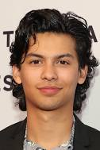
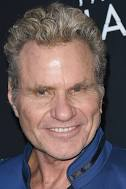

Sobre a série de TV
Cobra Kai é uma websérie americana de drama e ação de artes marciais, baseada na trilogia Karate Kid, criada por Robert Mark Kamen, que estreou em 2 de maio de 2018 no YouTube Premium, onde a história acontece com a reabertura do dojo de karatê Cobra Kai, por Johnny Lawrence e a reativação da antiga rivalidade com Daniel LaRusso.
A série criada por Jon Hurwitz, Hayden Schlossberg, e Josh Heald e, é estrelado por Ralph Macchio e William Zabka, que reprisam seus papéis dos filmes. Em 2019, esta série foi comprada pela Netflix.
Em 10 de maio de 2018, foi anunciado que a série foi renovada para uma segunda temporada, que estreou em 2019.[3] Em 2019, foi anunciada a terceira temporada, que estreou em 1ª de janeiro de 2021.[4] Em outubro de 2020, a Netflix anunciou a quarta temporada,[5] que foi lançada em 31 dezembro de 2021.[6][7] Em agosto de 2021, antes mesmo do lançamento da 4º temporada, a Netflix anunciou a quinta temporada, com estreia prevista para 2022. Cobra Kai tinha sido renovada para uma 5ª temporada ainda antes de lançar a 4ª. A 5ª foi lançada oficialmente em 09 de setembro de 2022, contendo 10 episódios.
Em 20 de janeiro de 2023, a Netflix renovou Cobra Kai para a sexta e última temporada.
Sinopse
A narrativa da série gira em torno de um assalto de vários dias preparado contra a Casa da Moeda Real, localizada na cidade de Madrid, na Espanha. Um homem misterioso, conhecido como "O Professor", tinha por objetivo realizar o maior assalto da história. Para executar esse plano ambicioso, recrutou uma equipe formada por oito pessoas com habilidades específicas em suas áreas de atuação, e que por suas histórias pessoais, não teriam nada a perder. O plano previa invadir o local e imprimir 2,4 bilhões de euros. Para isso alcançar tal façanha, os assaltantes precisariam passar 11 dias dentro da Casa da Moeda, e nesse período, além das atribuições relacionadas à produção das cédulas, também precisariam lidar com as forças policiais de elite e 67 reféns.
Durante o ano letivo de 2017-2018, a primeira temporada segue Johnny Lawrence, que agora mora em um pequeno apartamento em Reseda e faz biscates. Ele eventualmente usa o caratê para defender seu novo vizinho adolescente Miguel Diaz de um grupo de valentões e, finalmente, concorda em treinar Miguel no caratê (que estava implorando para que ele o fizesse). Esta decisão também leva Johnny a ressuscitar Cobra Kai de caratê o dojo como uma chance de recapturar seu passado; no entanto, esse ato reacendeu sua rivalidade com Daniel, que foi bicampeão do All Valley e agora é dono de uma rede de concessionárias de automóveis de grande sucesso, é casado com a coproprietária Amanda, e tem dois filhos: Samantha e Anthony. Daniel está finalmente vivendo o estilo de vida rico que invejava quando criança, quando morava em Reseda. No entanto, depois que seu amigo e mentor Sr. Miyagi morreu, a luta de Daniel para se conectar significativamente com seus filhos interrompeu o equilíbrio em sua vida. Enquanto isso, o dojo de Johnny atrai um grupo de intimidados que encontram camaradagem e autoconfiança sob sua tutela, um contraste marcante com o tipo de alunos que Johnny e seus amigos eram quando treinavam no Cobra Kai original dirigido por Kreese. Johnny desenvolve um vínculo com Miguel de uma forma que lembra a relação entre Daniel e o Sr. Miyagi. A filosofia de Cobra Kai, no entanto, permanece praticamente inalterada, embora Johnny tente infundir mais honra do que Kreese. Por outro lado, Robby consegue um emprego na concessionária de carros de Daniel para se vingar de Johnny por tê-lo abandonado. Mais tarde, ele desenvolve uma rivalidade com Miguel que lembra a rivalidade entre Daniel e Johnny, e em 19 de maio, ele treina Miguel para uma vitória no All-Valley Karate Tournament 2018 (que também levou à derrota de Robby).
A segunda temporada ocorre durante o verão de 2018, após a vitória de Cobra Kai no All-Valley Karate Tournament 2018, Kreese retorna e seus esforços para restaurar o dojo à sua antiga glória começam a interferir nas tentativas de Johnny de reformá-lo. Enquanto isso, Daniel reabre o Miyagi-Do com Robby e Sam como seus alunos em resposta ao sucesso de Cobra Kai, gerando uma enorme rivalidade entre os dois dojos. Johnny também se reúne brevemente com os membros originais do Cobra Kai, Tommy, Bobby e Jimmy. Depois de uma briga brutal na escola no primeiro dia de aula no final da segunda temporada, Johnny é expulso do Cobra Kai por Kreese e concorda em fazer parceria com Daniel para derrubar o dojo.
A terceira temporada ocorre durante o outono de 2018 e mostra o retorno de personagens como Ali, Chozen e Kumiko. Em seguida, a quarta temporada ocorre entre janeiro a maio de 2019 e gira em torno de sua decisão de acabar com Kreese de uma vez por todas, preparando-se para o próximo Torneio de Karatê All-Valley. No entanto, as coisas se complicam quando Kreese traz Terry Silver, seu antigo parceiro e amigo, que se mostra um inimigo mais perigoso e insidioso do que o próprio Kreese.
A quinta temporada continua em 2019 e mostra os esforços de Daniel e Johnny para derrubar Cobra Kai, que agora é comandado por Silver após uma vitória trapaceada no All-Valley Karate Tournament de 2019 e Kreese sendo preso após Silver incriminá-lo por tentativa de homicídio. Daniel também traz seus ex-rivais Chozen e Mike Barnes para ajudar. Jessica Andrews também retorna como prima de Amanda.
1ª temporada (2018)
Após salvar uma assaltante de um roubo ao banco de ser presa, um homem conhecido como "O Professor" lhe propõe um assalto incomparável. Assim que reúne uma equipe de oito pessoas, o Professor instruí os assaltantes a roubarem a Casa da Moeda da Espanha, localizada na cidade de Madrid na Espanha. Os oito ladrões têm o nome código de distintas e aleatórias cidades ao redor do mundo: Tóquio, Moscou, Berlim, Nairóbi, Rio, Denver, Helsinque e Oslo. Vestido com macacões vermelhos com uma máscara do pintor espanhol Salvador Dalí, o grupo de ladrões força 67 reféns imprimirem €2.4 bilhões de euros, para depois fugirem em um túnel secreto. O Professor auxilia o grupo em local externo longe do alcance da polícia e da inspetora Raquel. Durante as partes 1 e 2, os ladrões têm dificuldades em seguir as regras predefinidas dentro da Casa da Moeda e enfrentam violência, isolamento, motim e uma crescente falta de sono.
Após um desentendimento com uma cliente, Johnny é demitido de um de seus empregos mais fixos e acaba conhecendo o jovem Miguel Diaz, seu vizinho a quem inicialmente não dá atenção, mas logo vê que o garoto precisa de ajuda, já que é recém-chegado na cidade, não possui amigos e ainda é perseguido por um grupo de valentões. Buscando por sua própria redenção além de poder ajudar Miguel, Johnny reabre seu ex-dojo de karatê, o infame "Cobra Kai", mas as coisas não serão nada fáceis, já que sua antiga rivalidade com Daniel LaRusso é reacendida, quando os seus caminhos se entrelaçam com a próxima geração de "Karatê Kids".
Hoje em dia, diferente de seu adversário, Daniel LaRusso vive uma vida perfeita, sendo dono de sua própria concessionária, a LaRusso Auto e sendo um bem sucedido marido e pai de família. Isto é, até que ele veja que o dojo do Cobra Kai(a fonte de sua angústia na adolescência) foi restabelecido por Johnny, que agora luta para abrir o seu negócio, enquanto começa a ensinar karatê para o seu vizinho adolescente Miguel. Danny enfrenta o ex-oponente e a antiga desavença é rapidamente reiniciada. Enquanto isso, o até então solitário Miguel tenta fazer novos amigos e conhece o irônico Demetri e o silencioso Eli, dois nerds excluídos da escola que logo se tornam seus primeiros amigos. Miguel é apaixonado por Samantha, que apesar de seu uma boa garota, faz amizade com pessoas fúteis e interesseiras que só pensam em usufruir dos bens dela, o que preocupa seu pai, que não admira as amizades que a filha está fazendo, apesar de sua esposa e mãe de Sam, Amanda, tentar fazer com que o marido seja mais compreensivo.
Antigamente, Sam era amiga de Aisha Robinson, uma garota nerd, negra e obesa que apesar de vir de família bem sucedida(e seu pai ser um grande amigo de Danny), não é aceita pelo grupo dos mais populares de sua escola e devido ao envolvimento de Sam com eles, as duas amigas acabam se afastando, mesmo que Sam ainda se mostre atenciosa e queira reatar a amizade que tinha com Aisha, que sofre com o afastamento enquanto Sam demonstra preferir outras amizades. Dentre as quais está Kyler, valentão que persegue Miguel praticando bullying contra ele juntamente com seus amigos. Kyler é o atual interesse amoroso de Sam, que é grande amiga da patricinha Yasmine e da zen Moon, que é alvo do interesse de Eli, mas sequer o nota, enquanto Yasmine vive fazendo piadas ofensivas a Aisha e incentiva suas amigas a fazerem o mesmo. Com o recente namoro entre Sam e Kyler, Danny e Mandy convidam o genro para que jante em sua casa, ao que Danny, apesar de ser simpático com o rapaz, não vai muito com a cara dele. Nesse meio tempo, o recente sensei Lawrence leva o treinamento de Miguel a sério e começa a criar um verdadeiro pupilo, enquanto lida com a rejeição de seu filho Robby Keene, que se tornara um delinquente e está faltando constantemente á escola e andando com más companhias.
Johnny tenta incansavelmente recrutar mais alunos para ingressar no seu dojo, enquanto isso, um Danny perturbado com as amizades da filha Samantha, a acompanha no baile de halloween da escola. Inicialmente, Danny vai ao baile apenas na função de monitor(visto que é ex-aluno do colégio e foi convidado pela coordenadora que também é ex-aluna), mas acaba se intrometendo no romance de Sam com Kyler, visto que logo percebe que este não é um bom rapaz e está influenciando a garota negativamente. Durante o mesmo baile, Aisha é alvo de cyberbullying por Yasmine devido a sua fantasia e seu comportamento principalmente á mesa, enquanto Miguel, Demetri e Eli tentam se enturmar com outros jovens na festa, sem sucesso, até que acabam trombando com Kyler e seus amigos. Demetri e Eli conseguem escapar, mas Miguel acaba sendo torturado pelos valentões enquanto Danny cruza com Johnny nos corredores do colégio e confronta seus métodos, se mostrando uma ameaça aos negócios do antigo rival.
Quando o outdoor da LaRusso Auto(com uma foto de Danny sorrindo) é borrifado com uma pichação obscena, Danny acredita ter sido vandalizado por seu rival nas vendas automotivas Tom Cole, que mesmo não sendo culpado pelo vandalismo, zomba de Danny devido ao ocorrido. Na verdade, foi o próprio Johnny quem pichou o outdoor como revolta após Danny ameaçar ir contra o Cobra Kai com todas as suas forças, inclusive após Johnny presenciar Miguel caído ao chão na festa da escola após ter apanhado de Kyler e seus amigos enquanto o próprio Miguel é proibido por sua mãe de continuar aprendendo karatê, mas esta volta atrás após o próprio Johnny insistir com ela para que deixe Miguel continuar. Obviamente, após Danny descobrir que Johnny é o autor real do vandalismo, as tensões entre os dois rivais aumentam ainda mais. Enquanto isso, Robby está envergonhado com o novo dojo do seu pai e o bullying que Miguel sofre na escola inspira o sensei de uma maneira surpreendente enquanto Aisha, que virou piada na escola após o halloween, se junta ao Cobra Kai também afim de se defender do bullying que sofre por Yasmine, além de querer ganhar autoconfiança, á medida que Sam percebe as provocações da turma de Kyler para com Miguel e seus amigos e começa a perceber com quem está se envolvendo, também se dando conta da má influência de Yasmine sobre ela.
Danny tenta chegar a um acordo duvidoso com um cliente, para acabar com o dojo de Johnny e luta para novamente encontrar o equilíbrio em sua vida visitando o túmulo de um velho amigo. Enquanto isso, Johnny expande as matrículas do seu dojo e Miguel coloca sua prática de caratê em realidade quando Samantha enfrenta uma forte rejeição na escola após terminar com Kyler e seu pai ser alvo de piada graças ao vandalismo de Johnny em seu outdoor, o que causou também o rompimento da amizade com Yasmine e Moon. Após Miguel defender Sam de Kyler e seus amigos, outros jovens se interessam em entrar no Cobra Kai afim de lutar como ele. Este episódio é dedicado a memória de Pat Morita, o eterno senhor Miyagi.
A vitória de Miguel sobre Kyler e os valentões da escola acab sendo filmada e isso atrai para o Cobra Kai um grupo de novos alunos desajustados, dentre os quais estão Demetri e Eli, que estranham os métodos e o tratamento nada convencional de Johnny com sua classe, se sentindo intimidados, ao que Demetri enfrenta o sensei e tem seus argumentos jogados por terra após este o derrubar no tatame, fazendo Demetri desistir do Cobra Kai. Eli, por outro lado, acaba tomando os insultos de Johnny como incentivo e adota um novo visual(com cabelo estilo moicano e pintado de azul, além de uma tatuagem de um falcão nas costas) e uma nova atitude, além de preferir ser chamado de Falcão a partir de então, assumindo nova identidade e novo comportamento(deixando de lado seu antigo jeito retraído e sendo bem mais astuto). Enquanto isso, afim de humilhar seu pai, Robby consegue um novo emprego na concessionária LaRusso Auto, apesar de sofrer certas provocações nas mãos de Louie LaRusso, primo malandro de Danny que é funcionário da empresa. Mesmo assim, Robby logo conquista a simpatia de Danny e se dedica a seu novo trabalho. Na escola, Sam e Miguel se tornam amigos durante uma aula de ciências e Danny inspira o interesse pelo karatê numa pessoa improvável.
Daniel começa a ensinar o seu novo aluno de karatê, Robby, utilizando as técnicas não convencionais do Sr. Miyagi. Mesmo aprendendo a ser mais disciplinado através de Danny, Robby ainda se questiona se deveria seguir este caminho ou voltar a suas amizades com malandros delinquentes. Enquanto isso, Johnny ajuda Miguel com o seu primeiro encontro com Sam, enquanto o próprio Johnny terá de enfrentar Danny no comitê de karatê da cidade afim de ingressar o Cobra Kai no torneio que está por vir, tentando convencer que seu novo Cobra Kai é diferente daquele dirigido por John Kreese, que fora banido anos atrás.
Após conseguir ingressar no torneio regional, Johnny prepara seus alunos do Cobra Kai para o torneio em questão, enquanto Danny ainda não faz ideia de que Robby é filho de Johnny e com o desenrolar dos eventos, parece que nada realmente mudou entre Danny e Johnny mesmo após 30 anos, já que apesar dos esforços de Johnny para seguir em frente, ele acaba sofrendo um ataque inesperado em sua própria casa, liderado por Louie, que em resposta ao outdoor de Danny pichado por Johnny, queima o carro deste e chama seus amigos motoqueiros afim de piorar a situação. Enquanto Robby está trabalhando para Danny e treinando karatê com ele, o rapaz acaba conhecendo Sam e se interessa por ela. Não demora muito até que eles se tornem amigos e ele seja convidado para jantar na casa dos LaRusso, quando Miguel, que sequer conhece Danny e a família de sua namorada, se prepara para se apresentar a estes, mas acaba avistando a família jantando com Robby em seu quintal e deduz que Sam está se interessando por este(que ele nem sabe que se trata do filho de seu sensei Johnny), enquanto a própria Sam aprende por sua avó Lucille(mãe de Danny) um pouco mais sobre o Cobra Kai e teme estar se envolvendo justamente com um aluno do tal dojo.
Após ser atacado por Louie e seu bando, Johnny consegue se defender e descobre através de Louie onde mora seu primo Danny, a quem Johnny confronta. Danny afirma não ter nada a ver com o ataque de Louie e planeja demitir o primo além de ressarcir os danos a Johnny lhe presenteando com um novo carro numa tentativa de apaziguar essa rivalidade constante, assim, eles revisitam o passado juntos. Ainda na casa dos LaRusso, Johnny revela a Danny e a Mandy sobre o acidente de carro envolvendo ele e Sam com suas amigas, constatando que elas estavam ao celular durante o ocorrido, o que faz Mandy colocar Sam de casctigo sem poder sair com Miguel, além de confiscar seu celular. Em meio a isso, Miguel, após ter visto Robby jantando com Sam e já que ela passou a não responder suas ligações e mensagens, começa a pensar que sua namorada o está enganando e desabafa com Demetri, Eli, Aisha e seus outros companheiros de Cobra Kai, quando Demetri(que é o único que não faz parte do Cobra Kai) confronta a nova personalidade de Eli, que agora só quer ser chamado de Falcão e retruca com rebeldia a forma como Demetri teima em tratá-lo.
Aisha descobre pelas redes sociais que Yasmine irá dar uma festa de aniversário só com os mais populares apenas para provocar os excluídos, ao que a garota do Cobre Kai se inflama e decide dar o troco na patricinha e intimidar seus amigos, chegando mais cedo no local da festa(que é num parque da cidade á beira de seu maior lago, começando ao por do sol). Enquanto isso, Sam sofre com seu celular confiscado e as constantes provocações de seu irmão mais novo Tony(filho caçula de Danny e Mandy), que insiste em provocá-la enquanto ela não consegue se explicar para Miguel, que durante todo esse tempo segue desconfiado á medida que Sam vai se afeiçoando a Robby. Com a festa se aproximando, Aisha convoca todos os alunos do Cobra Kai e mais alguns nerds e impopulares á medida que Falcão e os demais vão se preparando para o evento, comprando bebidas e outras coisas. Convidada por Miguel e Aisha, Sam é proibida por sua mãe de ir á festa, mas por ter convidado Robby á mesma, este acaba a libertando do castigo através de uma desculpa esfarrapada, apenas para tirá-la de casa.
Durante a festa, Yasmine chega ao local e para sua desagradável surpresa, se depara com pessoas que ela não convidou e nem fazem seu perfil de amigos, mas para sua surpresa, Kyler e seus amigos ao avistarem Miguel, parecem se sentir intimidados e decidem ir embora e fazer outra coisa, mas Moon acaba se cativando pela festa em si e se depara com Falcão, finalmente se encantando com ele, que vê que enfim chamou a atenção de seu interesse amoroso. Vendo isso, Demetri tenta conquistar Yasmine, mas sem sucesso, visto que ela despreza tipos como ele. Em meio ao desespero de Yasmine diante de sua festa fracassada, ela se depara com Aisha e começa a desmerecê-la, sendo humilhada por esta logo em seguida e tendo que bater em retirada, ainda mais depois de ver que Moon mudou de lado e se afeiçoou aos nerds, além de flertar com Falcão, enquanto Miguel, nervoso pela falta de resposta de Sam, acaba exagerando na bebida e pouco depois, avista sua namorada chegando atrasada com Robby e já confronta os dois, achando que se trata de Sam com um suposto amante. Ela tenta se explicar, mas ele, bêbado, não acredita em suas histórias, achando que esta está inventando desculpas e quando Robby parte em defesa dela, os dois acabam brigando e sobra para Sam, que se revolta contra Miguel e se recusa a prestigiá-lo no torneio, rompendo o namoro ali mesmo e indo embora com Robby a seguindo. Após Danny e Johnny revisitarem seu passado e até descobrirem coisas em comum a ponto de ficarem temporariamente em paz um com o outro, os dois voltar á casa dos LaRusso onde se deparam com Robby, a quem Danny se refere como seu aluno, gerando revolta em Johnny, que inicia uma briga na qual Danny finalmente se dá conta de que Johnny e Robby são pai e filho e se sente usado e enganado pelo rapaz, demitindo-o da concessionária ali mesmo e deixando de ser seu sensei, enquanto um Johnny traído vai embora de lá, brigado novamente com Danny e decepcionado com seu filho Robby.
O altamente antecipado torneio de karatê traz Johnny Lawrence e Daniel LaRusso novamente para lados opostos, exceto que desta vez, é a nova geração de estudantes de caratê que são os combatentes, sendo Miguel e os Cobra Kai liderados por Johnny enquanto Robby ingressa sozinho no torneio, mas seguindo o que aprendeu com Danny. Sam apenas vai ao torneio por causa de sua família, sendo que Miguel tenta reconquistá-la, mas pretende descontar toda sua raiva em Robby. Quem vai pagar o preço pela vitória final?
Trailer temporada 01
2ª temporada (2019)
Dois a três anos após o assalto na Casa da Moeda da Espanha, os ladrões curtem espalhados em diversos locais. No entanto, quando a polícia Europol captura Rio com um telefone interceptado, o Professor retoma os antigos planos de Berlim de invadir o Banco de Espanha para forçar a Europol a entregar Rio. Ele e Raquel (agora "Lisboa"), que se apaixonaram e são um casal, juntam a gangue incluindo Mónica (agora "Estocolmo") e recrutam três novos membros: Bogotá, Palermo, Marselha, Manila, Pamplona e Logronho. Os ladrões disfarçados esgueiram-se para o banco fortemente protegido, tomam reféns e, eventualmente, obtêm acesso aos segredos de ouro e de Estado, enquanto o Professor e Lisboa estão em uma van em movimento para se comunicar com os ladrões e a polícia. Uma brecha no banco é impedida, forçando a polícia, liderada pelo coronel Luis Tamayo e pela inspetora grávida Alicia Sierra, a liberar Rio para os ladrões.
Daniel ajuda Sam e Robby a melhorar o equilíbrio no treino. No trabalho, ele tenta vender mais carros. Johnny impressiona Kreese com uma técnica criativa, mas arriscada.
Johnny fala sobre seus erros como pai depois de Miguel descobrir quem é Robby. Em busca de novos alunos, Daniel se apresenta em um festival.
Daniel tenta promover o Miyagi-Do mais uma vez, mas Cobra Kai rouba a cena. Johnny suspeita das histórias contadas por Kreese. Depois de se envolver em uma briga no shopping, Demetri recebe ajuda de Daniel. Johnny descobre que Robby está morando com Daniel.
Os novos alunos de Daniel aprendem a acertar as diferenças. Enquanto Johnny viaja com os amigos, Kreese tenta minar a reputação dele no dojô. Os dois senseis usam técnicas de treinamento incomuns, e Johnny descobre o que Kreese anda ensinando. A paixão de Daniel pelo Miyagi-Do põe o negócio em risco.
O caso secreto entre Sam e Robby esquenta, mas a relação entre Daniel e Amanda continua fria. Johnny decide usar um app de relacionamento.
Johnny e Daniel se encontram em um restaurante. Em uma festa, aumenta a tensão entre os alunos dos dois senseis. No primeiro dia de aula, a treta entre Tory e Sam provoca uma briga entre os grupos de caratê nos corredores da escola.
Trailer parte 03
3ª temporada (2021)
Miguel está lutando para sobreviver, Robby sumiu e a reputação de Daniel e Johnny está por um fio com a reação da comunidade à briga em West Valley. Daniel e Johnny se unem para procurar Robby. O futuro de Miguel é incerto. Kreese tenta trazer Tory de volta ao Cobra Kai.
A má reputação de Daniel atrapalha as vendas e ele recebe uma oferta de compra. Johnny tenta arrecadar dinheiro para a cirurgia de Miguel. Depois de uma reunião importante no Japão, Daniel volta à cidade do Sr. Miyagi em Okinawa. Johnny tenta se reaproximar de Robby.
Em Okinawa, Daniel passa um tempo com uma amiga antiga e um velho inimigo que tem muito a ensinar. A rivalidade entre os dojôs desencadeia um violento confronto. Miguel ajuda Johnny a criar a mensagem perfeita para as redes sociais. Kreese procura novos recrutas. Daniel e Amanda tentam fechar o Cobra Kai.
Daniel passa um tempo com a filha. Johnny planeja abrir um novo dojô de caratê, mas não consegue pensar em um nome legal. Informados de que o Torneio Regional será cancelado, os três senseis concorrentes fazem uma reunião na prefeitura para salvá-lo.
Chegou o fim do ano e o romance está no ar. Daniel e Miguel descobrem coisas em comum. Os recrutas do Cobra Kai saem em uma missão. Velhas feridas começam a cicatrizar em uma festa de fim de ano, mas um ataque violento dos alunos de Kreese leva a novas traições e alianças.
Trailer temporada 03
4ª temporada (2021)
Johnny e Daniel unem os dojôs, mas seus estilos opostos batem de frente. Kreese tenta convencer um antigo parceiro a se juntar a ele no Cobra Kai. Johnny aprende a ser mais defensivo e Daniel melhora suas estratégias ofensivas. Amanda confronta Tory. O novato Kenny sofre bullying na escola.
Encorajado por Robby, Kenny quer ser aluno no Cobra Kai. Johnny pede a Sam para dar um voto de confiança – a si mesma. Kreese traz Terry de volta ao Cobra Kai, mas o antigo parceiro não quer repetir a história. Daniel se torna mentor de Miguel e desperta a inveja de Johnny.
Johnny e Daniel partem para um confronto entre senseis para decidir quem treina os alunos, colocando o dojô e sua frágil aliança em risco. O torneio se aproxima e uma grande mudança leva Johnny a fazer de tudo para conseguir uma nova recruta. Tory precisa pedir um favor aos LaRussos.
Daniel convida Anthony para o Miyagi-Do e descobre que não conhece o filho tão bem quanto imaginava. Miguel fica sabendo da verdade sobre Johnny e Carmen.
Miguel e Sam estão empolgados para ir ao baile de formatura, até que outro casal aparece. Terry atrai Johnny para um local familiar.
O Torneio Regional de Caratê Sub-18 tem início e vários dojôs brigam pelo título de grande campeão e por alguns acertos de contas pessoais. O torneio termina de maneira surpreendente, com repercussões que abalam os participantes e levam dois campeões a enfrentar futuros incertos.
Trailer temporada 04
5º temporada (2022)
O novo aliado de Daniel testa a paciência de Amanda. Miguel vai ao México à procura do pai. Terry inicia mudanças no Cobra Kai. Chozen e Daniel bolam um plano arriscado contra Terry. No México, Robby e Johnny procuram por Miguel, que descobre a verdade sobre o pai.
Outro inimigo do passado de Daniel reaparece. Após passar um dia tentando se reconectar com seu eu interior, Sam toma uma decisão sobre o futuro com Miguel. Enquanto o relacionamento de Johnny e Carmen vai bem, o de Daniel e Amanda é abalado pelos esquemas de Terry. A rixa entre os adolescentes vem à tona no parque aquático.
Daniel conta com a ajuda de um amigo e recorre a um improvável aliado. A tensão chega ao máximo entre Miguel e Robby. Alguém do passado retorna. Terry recruta uma especialista no Método do Punho. Enquanto Daniel abandona uma briga, Johnny e Chozen iniciam outra. Na prisão, Kreese enfrenta antigos demônios.
Terry e Kim lançam um desafio brutal, mas Chozen ensina a seus alunos uma lição diferente. Johnny e Daniel pressionam Kreese em busca de respostas. Uma vaga cobiçada em um torneio de elite internacional desencadeia uma luta entre dojos. Tory enfrenta um teste de lealdade. Sam luta para esquecer Miguel.
Tory paga um preço pela rebeldia. Arraia enfrenta sua consciência. Uma noite de comemoração na cidade toma um rumo diferente para Johnny, Daniel e Chozen. Brigas irrompem durante a noite. Johnny, Daniel, Chozen e os alunos precisam reunir suas habilidades e forças para expor Terry e derrubá-lo.
Trailer temporada 05 - Parte 01
Trailer temporada 05 - Parte 02
Produção
Dublagem brasileira
Direção: Erick Bougleux/ Leonardo Santhos
Tradução: Guy Demke/Vanessa Navarro
Dubladores
Mário Jorge Andrade: Johnny Lawrence
Nizo Neto: Daniel LaRusso
Yan Gesteira: Miguel Diaz
João Cappelli: Robby Keene
Isabella Simi: Samantha LaRusso
Cadu Paschoal: Demetri
Yuri Tupper: Eli
Luiz Feier Motta: John Kreese
Mabel Cezar: Amanda LaRusso
Escolha do elenco
Os atores souberam da renovação do programa pela Netflix antes que os produtores os contatassem para retornar. Em outubro de 2018, a Netflix anunciou o elenco da parte 3; o elenco principal de volta incluía Pedro Alonso, levantando especulações sobre seu papel na parte 3. Entre os novos membros do elenco estava o ator argentino Rodrigo de la Serna, que viu uma possível conexão entre o nome de seu personagem e a lenda do futebol argentino Martín Palermo, e a estrela de Vis a vis, Najwa Nimri. Cenas de especiais do astro do futebol brasileiro e fã da série Neymar como monge foram filmadas para a parte 3, mas foram excluídas do streaming sem repercussão na narrativa até que as acusações judiciais contra ele fossem retiradas no final de agosto de 2019. Uma pequena aparição da atriz espanhola Belén Cuesta em dois episódios da parte 3 levantou fãs e especulações da mídia sobre seu papel na parte 4.
Retorno de Personagens Originais: A série trouxe de volta os atores originais de "Karate Kid", como Ralph Macchio (Daniel LaRusso) e William Zabka (Johnny Lawrence), o que ajudou a estabelecer uma conexão imediata com os fãs dos filmes originais.
Introdução de Novos Personagens: Além dos personagens originais, a série apresenta uma nova geração de personagens, como Miguel, Sam e Hawk, que foram cuidadosamente selecionados para adicionar frescor à história e atrair um público mais jovem.
Testes de Elenco: Para os novos papéis, foram realizados testes de elenco extensivos para garantir que os atores selecionados se encaixassem nos personagens e na dinâmica da série.
Equilíbrio de Personalidades: O elenco foi escolhido de forma a equilibrar diferentes personalidades e estilos de atuação, criando uma dinâmica interessante entre os personagens.
Experiência em Artes Marciais: Devido à natureza da série, foi dada preferência a atores com experiência em artes marciais, o que ajudou a trazer autenticidade às cenas de luta.
Elenco principal



Trilha sonora
A canção italiana antifascista "Bella ciao" toca várias vezes ao longo da série e acompanha duas cenas-chave emblemáticas: No final da primeira parte, o Professor e Berlim cantam em preparação para o roubo, abraçando-se como resistência contra o estabelecimento, e na segunda parte que desempenha durante a fuga dos ladrões da Casa da Moeda, como uma metáfora para a liberdade. Sobre o uso da música, Tokio relata em uma de suas narrações: "A vida do Professor girava em torno de uma única ideia: Resistência. Seu avô, que lutou contra os fascistas na Itália, ensinou-lhe a música e ele nos ensinou". A canção foi levada ao show pelo escritor Javier Gómez Santander. Ele tinha ouvido "Bella ciao" em casa para animá-lo, já que ficou frustrado por não encontrar uma música adequada para o meio da parte 1. Ele estava ciente do significado e da história da música e sentiu que representava valores positivos. "Bella ciao" se tornou um hit de verão na Europa em 2018, principalmente devido à popularidade da série e não aos temas graves da música.
Músicas Clássicas: A trilha sonora também inclui músicas clássicas dos filmes originais de "Karate Kid", como "You're the Best" de Joe Esposito e "Cruel Summer" do Bananarama, que são usadas de forma inteligente para evocar a nostalgia dos fãs.
Músicas Modernas: Além das músicas clássicas, a série apresenta uma variedade de músicas modernas de artistas contemporâneos, que ajudam a estabelecer o tom e a atmosfera de diferentes cenas.
Integração com a Narrativa: A trilha sonora é integrada de forma inteligente à narrativa da série, ajudando a destacar momentos emocionais, cômicos e de ação de maneira eficaz.
Influências Musicais: A trilha sonora de "Cobra Kai" é influenciada por uma variedade de gêneros musicais, incluindo rock, pop e música eletrônica, criando uma mistura eclética que complementa perfeitamente o estilo visual e narrativo da série.